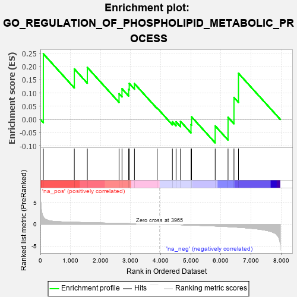
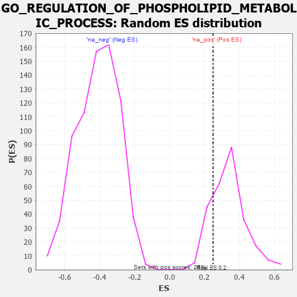

| | | Dataset | 7d |
| Phenotype | NoPhenotypeAvailable |
| Upregulated in class | na_pos |
| GeneSet | GO_REGULATION_OF_PHOSPHOLIPID_METABOLIC_PROCESS |
| Enrichment Score (ES) | 0.24838215 |
| Normalized Enrichment Score (NES) | 0.73835826 |
| Nominal p-value | 0.81060606 |
| FDR q-value | 0.9391546 |
| FWER p-Value | 1.0 |
Table: GSEA Results Summary

Fig 1: Enrichment plot: GO_REGULATION_OF_PHOSPHOLIPID_METABOLIC_PROCESS
Profile of the Running ES Score & Positions of GeneSet Members on the Rank Ordered List
| PROBE | GENE SYMBOL | GENE_TITLE | RANK IN GENE LIST | RANK METRIC SCORE | RUNNING ES | CORE ENRICHMENT | | 1 | IRS1 | | | 98 | 1.659 | 0.2484 | Yes |
| 2 | SRC | | | 1128 | 0.459 | 0.1911 | No |
| 3 | SOCS6 | | | 1560 | 0.381 | 0.1968 | No |
| 4 | VAV3 | | | 2614 | 0.210 | 0.0974 | No |
| 5 | PHB2 | | | 2712 | 0.197 | 0.1162 | No |
| 6 | TAZ | | | 2933 | 0.161 | 0.1138 | No |
| 7 | SOCS4 | | | 2953 | 0.157 | 0.1361 | No |
| 8 | MTMR2 | | | 3126 | 0.133 | 0.1354 | No |
| 9 | DGKZ | | | 3879 | 0.015 | 0.0432 | No |
| 10 | MTMR9 | | | 4387 | -0.074 | -0.0089 | No |
| 11 | SOCS7 | | | 4509 | -0.096 | -0.0091 | No |
| 12 | FGFR3 | | | 4656 | -0.129 | -0.0072 | No |
| 13 | KLF4 | | | 5005 | -0.198 | -0.0198 | No |
| 14 | WDR81 | | | 5024 | -0.203 | 0.0098 | No |
| 15 | MTMR3 | | | 5809 | -0.408 | -0.0245 | No |
| 16 | CDC42 | | | 6236 | -0.548 | 0.0081 | No |
| 17 | ABCA2 | | | 6433 | -0.634 | 0.0831 | No |
| 18 | ARF1 | | | 6583 | -0.701 | 0.1745 | No |
Table: GSEA details [plain text format]

Fig 2: GO_REGULATION_OF_PHOSPHOLIPID_METABOLIC_PROCESS: Random ES distribution
Gene set null distribution of ES for GO_REGULATION_OF_PHOSPHOLIPID_METABOLIC_PROCESS